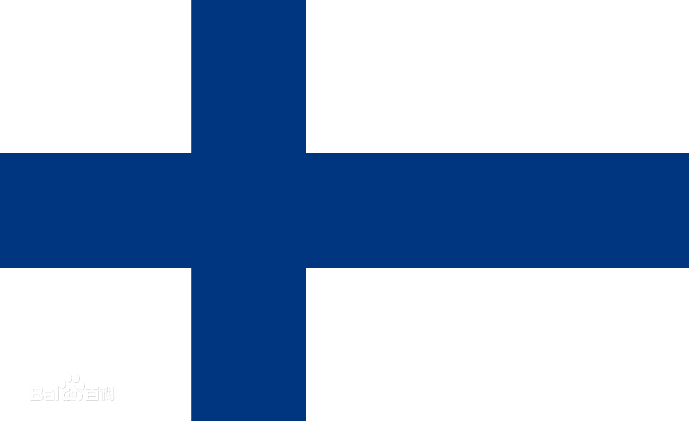
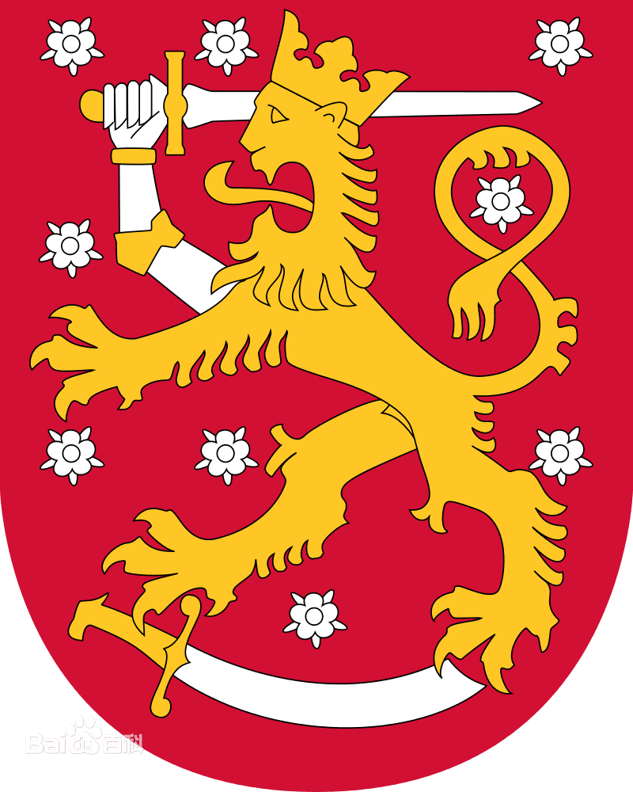

目录
简介
芬兰共和国，简称芬兰，位于欧洲北部，北欧五国之一，与瑞典、挪威、俄罗斯接壤，南临芬兰湾，西濒波的尼亚湾。国土总面积33.8万平方公里，海岸线长1100公里，内陆水域面积占全国面积的10%，有岛屿约17.9万个，湖泊约18.8万个，有“千湖之国”之称。芬兰冬季严寒漫长，夏季温和短暂，全国1/3的土地在北极圈内。
芬兰是一个高度发达的资本主义国家，也是一个高度工业化、自由化的市场经济体。芬兰是欧盟成员国之一，但人均GDP远高于欧盟平均水平，与其邻国瑞典相当。国民享有极高标准的生活品质，芬兰政府公务员清廉高效，并且在社会形成广泛共识。监督世界各国腐败行为的非政府组织“透明国际”公布2012年全球清廉指数报告，在176个国家和地区中，芬兰名列第一，为最清廉国家。2019年2月，2018年全球幸福指数出炉，芬兰排名第一 ；2021年，芬兰蝉联全球最幸福国家 。
芬兰是圣诞老人的故乡，最早的居民为拉普人，故芬兰又称拉普兰。芬兰人迁入后建立早期国家。自十二世纪开始芬兰便是瑞典的一部分。1397年并入卡尔玛联盟，1523年随瑞典一起独立。1809年俄瑞战争后遭俄罗斯帝国吞并，成为其下属的芬兰大公国。1917年12月宣布独立，实行共和制，成为永久中立国。
地理环境
区域位置
芬兰地处北纬60度到70度之间，面积为33.8145万平方公里，是欧洲第七大国。位于欧洲北部，北面与挪威接壤，西北与瑞典为邻，西临波的尼亚湾，东面是俄罗斯，西南濒波罗的海和芬兰湾。
气候环境
芬兰冬季严寒漫长，夏季温和短暂，全国1/3的土地在北极圈内，其余部分属于温带海洋性气候。从南至北，1月平均气温约-4～-16℃；7月气温16～13℃。年降水量约400～600毫米（三分之一为霰和雪
行政划分
重要城市
-
赫尔辛基
赫尔辛基是芬兰的首都和最大的港口城市，也是该国的经济、文化中心。市区面积448平方公里。大赫尔辛基面积1145平方公里，人口116.5万（1984）。海岸线曲折，外有群岛屏蔽。虽地处北纬60°，但因受海洋影响而气候温和，夏季平均气温16℃，冬季－6℃。市内建筑多用浅色花岗岩建成，有“北方洁白城市”之称。城中建有赫尔辛基大学、博物馆、图书馆、美术馆等文化教育设施
-
坦佩雷
坦佩雷市（Tampere）是拥有20多万人口的北欧最大的内陆城市，位于芬兰西南部，距首都赫尔辛基180公里，人口19万，是芬兰第三大城市。坦佩雷是由瑞典国王古斯塔夫三世（KingGustarIII）于1779年下令建立的。坦佩雷位于两大湖泊之间的狭长地带，风景优美，贯穿市中心的坦梅尔河是坦佩雷工业的发源地。1779年建立在坦佩雷急流之畔，在19世纪发展成芬兰最工业化的城市，由于新的城市计划，以前的工业区又再次恢复活力，餐馆，商店，运动减肥中心以及博物馆都在这里建立起来。坦佩雷也是一个国际度量教育和研究中心，这里有两所大学和很多研究机构，是芬兰南部的中心城市。
-
图尔库
芬兰第二大海港和重要工业基地，图尔库－波里省（西芬兰省）省会，又名奥布。位于国境西南端海岸，波的尼亚湾畔,东距首都赫尔辛基170千米，为芬兰旧都（1812年以前一直是芬兰首都）。市区面积24平方公里，包括郊区面积81平方公里。现为芬兰西南部的区域中心。
国家象征
- 国旗 
- 国徽
旅游
- 芬兰堡
- 罗瓦涅米
- 玛丽港
重要节日
- 独立纪念日：12月6日（1917年）
- 仲夏节：2004年6月25日
- 大学生戴帽节
- 圣诞节